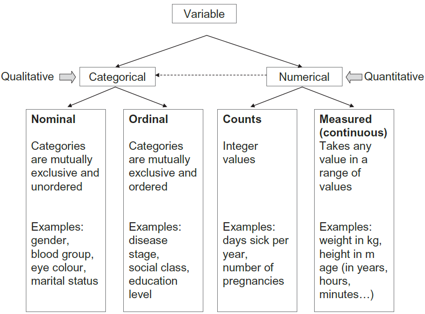

1 Introduction
1.1 Statistics and Medicine
Although some healthcare professionals may not carry out medical research, they will definitely be consumers of medical research. Thus, it is incumbent on them to be able to discern high quality research studies from low quality, to be able to verify whether the conclusions of a study are valid and to understand the limitations in methods of a study. The current emphasis on evidence-based medicine (EBM) requires that healthcare professionals consider critically all evidence about whether a specific treatment works and this requires basic statistical knowledge.
Statistics is not only a discipline in its own right but it is also a fundamental tool for investigation in all biological and medical sciences. As such, any serious investigator in these fields must have a grasp of the basic principles. With modern computer facilities there is little need for familiarity with the technical details of statistical calculations. However, a healthcare professional should understand when such calculations are valid, when they are not and how they should be interpreted.
The use of statistical methods pervades the medical literature. In a survey of 350 original articles published in three UK journals of general practice: British Medical Journal (General Practice Section), British Journal of General Practice and Family Practice, over a one-year period, Rigby et al. (2004) found that 66% used some form of statistical analysis. Another review by Strasak et al. (2007) of 91 original research articles published in The New England Journal of Medicine (one of the prestigious peer-reviewed medical journals) found an even higher percentage (95%) of using inferential statistics, for example, hypothesis testing and deriving estimates. It appears, therefore, that the majority of papers published in these journals require some statistical knowledge for a complete understanding.
To students schooled in the ‘hard’ sciences of physics and chemistry it may be difficult to appreciate the variability of biological data. If one repeatedly puts blue litmus paper into acid solutions it turns red 100% of the time, not most (say 95%) of the time. In contrast, if one gives aspirin to a group of people with headaches, not all of them will experience relief. Penicillin was perhaps one of the few ‘miracle’ cures where the results were so dramatic that little evaluation was required. Absolute certainty in medicine is rare.
Measurements on human subjects seldom give exactly the same results from one occasion to the next. For example, O’Sullivan et al. (1999), found that systolic blood pressure (SBP) in normal healthy children has a wide range, with 95% of children having SBPs below 130 mmHg when they were resting, rising to 160 mmHg during the school day, and falling again to below 130 mmHg at night. Furthermore, Hansen et al. (2010) in a study of over 8000 subjects found that increasing variability in blood pressure over 24 hours was a significant and independent predictor of mortality and a cardiovascular and stroke events.
This variability is also inherent in responses to biological hazards. Most people now accept that cigarette smoking causes lung cancer and heart disease, and yet nearly everyone can point to an apparently healthy 80-year-old who has smoked for many years without apparent ill effect. Although it is now known from the report of Doll et al. (2004) that about half of all persistent cigarette smokers are killed by their habit, it is usually forgotten that until the 1950s, the cause of the rise in lung cancer deaths was a mystery and commonly associated with general atmospheric pollution such as the exhaust fumes of cars. It was not until the carefully designed and statistically analysed case–control and cohort studies of Richard Doll and Austin Bradford Hill and others, that smoking was identified as the true cause. Enstrom (2003) moved the debate on to ask whether or not passive smoking causes lung cancer. This is a more difficult question to answer since the association is weaker. However, an overview of reviews by Cao et al. (2015) has now shown that it is a major health problem and scientists at the International Agency for Rsearch on Cancer (IARC) have concluded that there is sufficient evidence that second-hand smoke causes lung cancer (IARC 2012). Restrictions on smoking in public places have been imposed to smokers.
With such variability, it follows that in any comparison made in a medical context, such as people on different treatments, differences are almost bound to occur. These differences may be due to real effects, random variation or variation in some other factor that may affect an outcome. It is the job of the analyst to decide how much variation should be ascribed to chance or other factors, so that any remaining variation can be assumed to be due to a real effect. This is the art of statistics.
1.2 The discipline of statistics
The discipline of statistics includes two main branches:
descriptive statistics
inferential statistics
flowchart LR
A[Statistics]--> B[Descriptive statistics]
A --> C[Inferential statistics]
B --> D[Measures of location:
e.g., mean, median, mode.]
B --> E[Measures of dispersion:
e.g., standard deviation, quartiles]
B --> F[Measures of association:
e.g., correlation coefficients]
C --> G[Estimation]
C --> H[Hypothesis Testing]
Descriptive Statistics
The methods and techniques of descriptive statistics aim at summarizing large quantities of data by a few numbers, in a way that highlights the most important numerical features of the data.
Descriptive statistics include measures of central tendency, measures of dispersion, measures of position, and measures of association. They also include a description of the general shape of the distribution of the data. These terms will be explained in the corresponding chapters.
Inferential Statistics
Inferential statistics aim at generalizing a measure taken on a small number of cases that have been observed, to a larger set of cases that have not been observed. Using the terms explained above, we could reformulate this aim, and say that inferential statistics aim at generalizing observations made on a sample to a whole population.
1.3 Data and Variables
Biomedical Data
Biomedical data have unique features compared with data in other domains. The data may include administrative health data, biomarker data, biometric data (for example, from wearable technologies) and imaging, and may originate from many different sources, including EHRs, clinical registries, biobanks, the internet and patient self-reports.
Biomedical data can be transformed into information. This information can become knowledge if the researchers and clinicians understand it (Figure 1.2).
There are three main data structures: structured data, unstructured data, and semi-structured data.
Structured data is generally tabular data that is represented by columns and rows in a database.
Semi-Structured data is a form of structured data that does not obey the tabular structure, yet does have some structural properties. Emails, for example, are semi-structured by sender, recipient,subject, date, time etc. and they are also organized into folders, like Inbox, Sent, Trash, etc.
Unstructured data usually open text (such as social media posts), images, videos, etc., that have no predetermined organization or design.
In this textbook we use data organized in a structured format (spreadsheets). In statistics, tabular data refers to data that are organized in a table with rows and columns. A row is a observation (or record), which corresponds to the statistical unit of the data set. The columns are the variables (or characteristics) of interest.
Variables
A variable is a quantity or property that is free to vary, or take on different values. To gain information on a variable, it is necessary to design and conduct experiments.
Researchers design experiments to test if changes to one or more variables are associated with changes to another variable of interest. For example, if researchers think a new therapy is more effective than the usual care for the treatment of foot corns, they could design an experiment to test this hypothesis; participants should randomly assigned to one of two groups: one (the experimental group) receiving the new treatment that is being tested, and the other (the comparison group or control) receiving an alternative (conventional) treatment. In this experiment, the type of treatment each participant received (i.e., new treatment vs. no treatment) is the independent variable (IV), while the number of depressive symptoms observed in each person is the dependent variable (DV) or the outcome variable.
For example, in a randomized controlled trial (RCT), Farndon et al. (2013) investigated the effectiveness of salicylic acid plasters compared with usual scalpel debridement for treatment of foot corns. They recorded 20 variables for 202 patients; the data are presented in the table of Figure 1.3:
1.4 Types of Data
Data in variable can be either categorical or numerical (otherwise known as qualitative and quantitative) in nature (Figure 1.4).

Categorical Data
A. Nominal Data
Nominal categorical data are data that one can name and put into categories. They are not measured but simply counted. They often consist of unordered ‘either–or’ type observations which have two categories and are often know as binary. For example: dead or alive; cured or not cured; pregnant or not pregnant. However, nominal categorical data often can have more than two categories, for example, blood group A, B, AB, 0; country of origin; ethnic group; eye color. In Farndon et al. (2013) study gender is a binary variable (male or female), and the center where the the participants were treated is a nominal variable with seven level (Central, Manor, Jordanthorpe, Limbrick, Firth Park, Huddersfield, Darnall).
Warning
Numerical representation of categories are just codes
We can denote a male and female as 1 and 2 for gender and denote A, B, AB and 0, as 1, 2, 3, and 4 for blood type. Unlike numerical data, the numbers representing different categories do not have mathematical meanings (they are just codes).
Β. Ordinal Data
If there are more than two categories of classification it may be possible to order them in some way. For example, after treatment a patient may be either improved, the same or worse. Another example of an ordinal variable is the variable pain where a subject is asked to describe their pain verbally as minimal, moderate, severe, or unbearable. In Farndon et al. (2013) study, the smoking history variable has three categories coded as non-smoker=0, previous smoker=1, and current smoker=2. We know that someone who is a current smoker has more recent exposure to tobacco than someone who is an ex-smoker and someone who has never smoked. However, without further knowledge (of the current and past levels of tobacco consumption) it would be wrong to treat the codes of the categories as numerical quantities, as one cannot say that someone who is current smoker has twice the levels of tobacco consumption as someone who is a previous smoker.
Warning
Collapsion of categories leads to a loss of information
Ordinal data are often reduced to two categories to simplify analysis and presentation, which may result in a considerable loss of information.
Numerical Data
A. Discrete (or count) Data
Farndon et al. (2013) study recorded the number of corns each participant had at the start of the trial, since this can only be a whole number or integer value, for example, 0, 1, 2, or 3 in this trial, this is termed discrete or count data. Other examples are often counts per unit of time such as the number of deaths in a hospital per year, the number of visits to the GP in a year, or the number of attacks of asthma a person has per month. In dentistry, a common measure is the number of decayed, filled or missing teeth (DFM).
The difference between discrete data and the ordinal data described earlier can be seen by considering an example of each:
Β. Continuous (or measured) Data
Such data are measurements that can, in theory at least, take any value within a given range (they are restricted by the accuracy of the measuring instrument). These data contain the most information, and are the ones most commonly used in statistics. Examples of continuous data in Farndon et al. (2013) study are: age, corn size, and EQ-5D.
Sometimes it is reasonable to treat discrete data as if they were continuous, at least as far as statistical analysis goes. While age is a continuous measurement, age at last birthday is discrete. In studies of adults with ages ranging from, say, 16 to 80, no harm is done in considering age in years as a continuous measurement (and this is standard practice), but for studies of pre-school children it would be better to use age in months. Heart rate (in beats per minute) is another discrete measurement that is usually regarded as continuous. Although the essential requirement for this change of status is that there should be a large number of different possible values, in practice we do not worry too much about analysing discrete measurements as if they were continuous.
Warning
Categorization of numerical data leads to a loss of information
For simplicity, it is often the case in medicine that continuous data are dichotomized to make nominal data. For example, the diastolic blood pressure (DBP), which is continuous, is converted into hypertension (>90 mmHg) and normotension (≤90 mmHg). There are two main reasons for doing this. It is easier to describe a population by the proportion of people affected, for example, the proportion of people in the population with hypertension is 10%. Further, one often has to make a decision: if a person has hypertension, then they will get treatment, and this is easier if high blood pressure has been categorized. However, this dichotomization clearly leads to a loss of information.
One can also divide a continuous variable into more than two groups. For example, we could divide age into age bands of equal lengths of, say 10 years such as: 0-9, 10-19, 20-29, etc. When categorizing continuous data authors should give an indication as to why they chose these cut-off points, and a reader has to be very wary to guard against the fact that the cuts may be chosen to make a particular point.
Some statisticians have termed the habit of categorizing continuous variables as “dichotomania”, which they regard as poor practice since it loses information and assumes a discontinuous relationship that is unlikely in nature.
Tip
Record the actual values
It is best to record the actual value of blood pressure, haemoglobin, etc. It is easy to convert to categories in the analysis, but the raw data cannot be retrieved later if only categories are recorded. Information is lost with no compensatory gain. Indeed, the statistical analysis of continuous data is more powerful, and often simpler.
When some calculation is necessary to derive the observation of interest this should be done by the computer. Thus it is much better to record date of birth and date of examination for subsequent calculation of age rather than to rely on mental arithmetic.
The degree of measurement accuracy and the type of data are both important in relation to carrying out a proper statistical analysis.